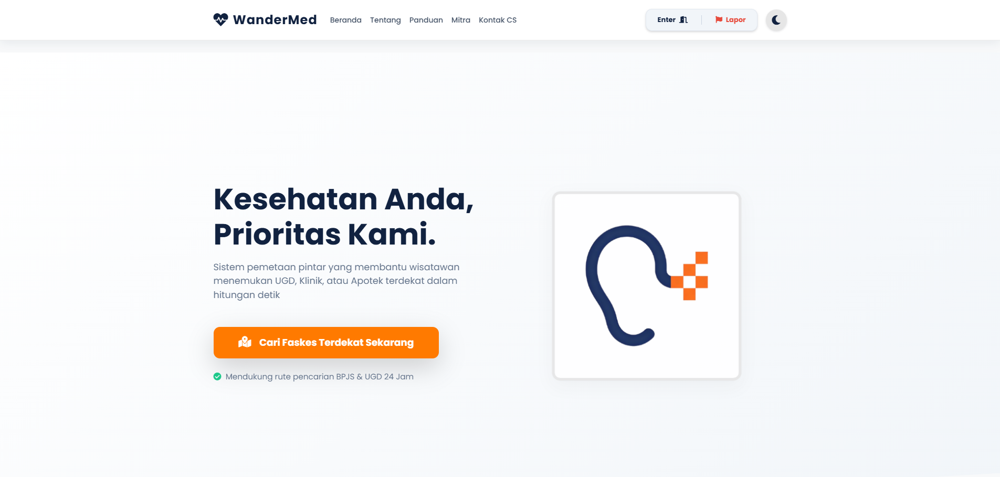
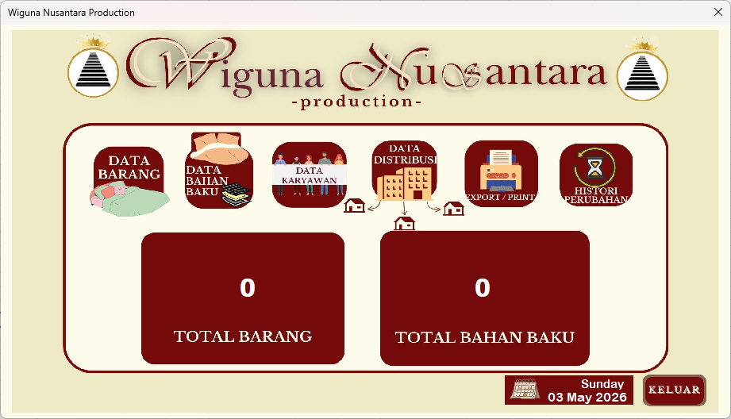
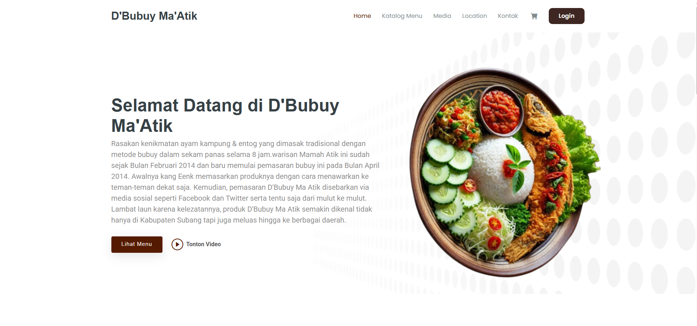

Showcase Proyek Nyata
 Live Production
Live Production
WFC Radar — Direktori Kafe Ramah Kerja
Platform pencarian ruang kerja berbasis peta interaktif dengan informasi fasilitas seperti Wi-Fi, colokan listrik, dan tingkat kebisingan.

GIS RoutingWanderMed — Direktori Faskes Darurat
Platform direktori fasilitas kesehatan darurat dengan perhitungan rute navigasi Google Maps untuk wisatawan di Kabupaten Subang.

Juara 2 InovasiComfy C-System — Sistem Inventaris Pergudangan
Aplikasi pencatatan stok dan pembukuan internal berbasis Excel VBA Macro untuk efisiensi pengelolaan inventaris UMKM Wiguna Nusantara.

E-Commerced'bubuy ma'atik — Platform Pemesanan Kuliner UMKM
Website katalog dan pemesanan online kuliner tradisional khas Sunda dengan pengelolaan basis data relasional MySQL untuk UMKM lokal.